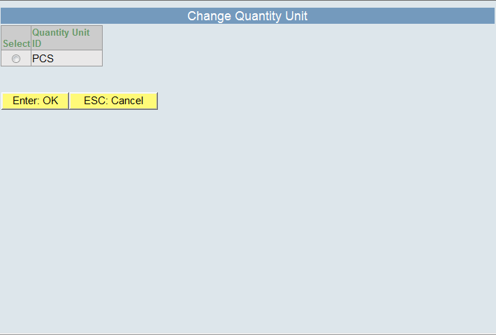

|
|
|
|


|

|
|
The counting and recounting screens provide all counting relevant information and various functions for different kind of confirmation of the counting result.
|
|
|
|
Field |
Description |
|---|---|
Counting Order |
Unique identifier of the currently executed Counting Order. |
Client |
Name of the Client as the owner of the Inventory Units to be counted. |
Load Unit |
Unique identifier of the Load Unit with the Inventory Unit to be counted. |
SKU |
SKU Id uniquely identifies a Stock Keeping Unit of the Client. |
Batch |
Batch of the Inventory Unit to be counted. |
SKU Description |
Additional description of the Stock Keeping Unit. |
Counting Method |
The "Quantity Determination Method" of the SKU indicates how to count. Possible values are:
|
Best Before Date |
Best before date of the Inventory Unit to be counted. |
Quantity |
Input for the counted quantity of the displayed Inventory Unit. |
Quantity Unit |
Quantity Unit of the counted quantity. |
|
|
|
|
Button |
Description |
||
|---|---|---|---|
LU Missing |
The Load Unit could not be located and the current Counting Order Line will be confirmed with the error code "LU Missing".
|
||
Change QU |
A separate screen allows for changing the Quantity Unit. One of the listed Quantity Units of the SKU could be selected for the counting operation.  |
||
OK |
Confirm the entered counting result for the current Counting Order Line.
|
||
Exit |
Cancel counting operations and switch to main menu. |